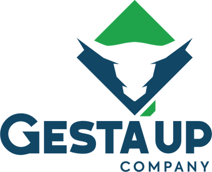
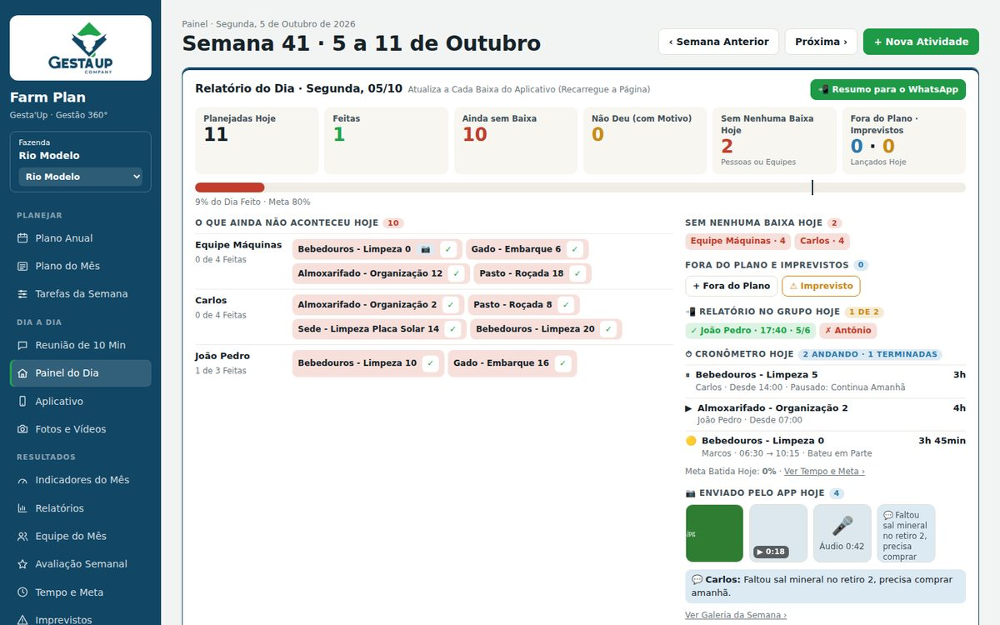
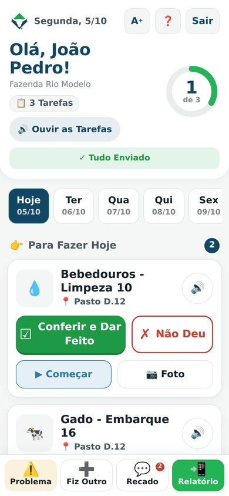
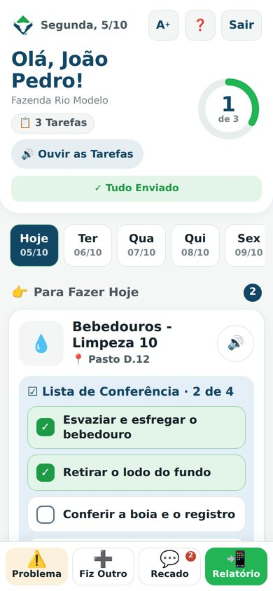
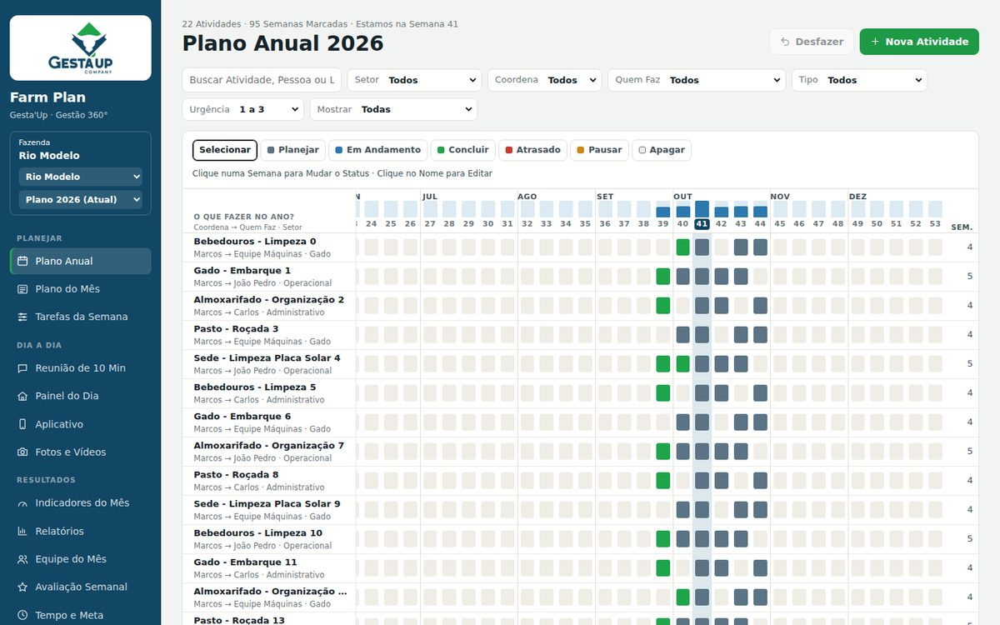
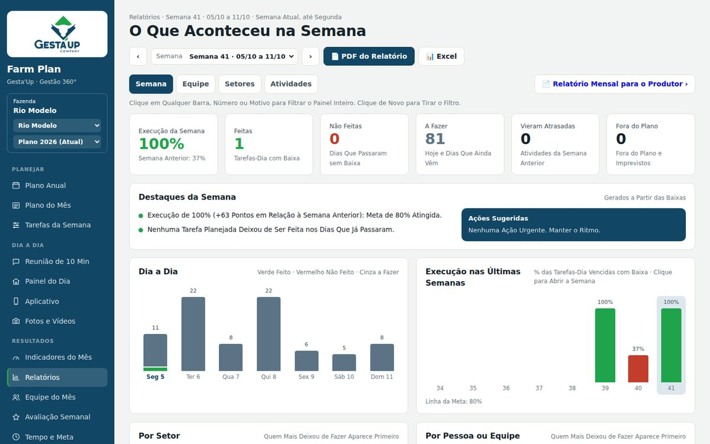

Farm Plan EntrarO Farm Plan junta o planejamento do ano, o aplicativo da equipe e os resultados do mês num só lugar. Você planeja no escritório, a equipe executa e registra no celular, mesmo sem internet, e você acompanha tudo no painel.


A planilha do ano dá trabalho para atualizar e quase ninguém da equipe olha para ela no dia a dia.
Cada um faz o que lembra. O que era importante na semana acaba ficando para depois.
Sem registro, não dá para saber o que foi feito, o que travou e por quê, nem cobrar com justiça.
Do ano para o mês, do mês para a semana, da semana para o dia. Cada um sabe o que fazer, e você sabe o que foi feito.
O Plano Anual com todas as atividades da fazenda, com o "como fazer" (5M), a meta e quem faz. Vira o plano do mês e as tarefas de cada semana sozinho.
Cada colaborador vê as tarefas do dia, marca ✓ Feito ou ✗ Não Deu com o motivo, manda foto e o relatório no grupo da fazenda.
O gestor acompanha o dia, a meta do mês, os imprevistos e as notas da equipe. O que se repete vira melhoria no plano.

O aplicativo foi pensado para o peão, o vaqueiro e o operador de máquina. Botão grande, desenho em cada tarefa e o celular que fala.
O que foi feito, o que não deu e por quê, quem mandou o relatório.
Quanto do plano foi cumprido, por semana, por setor e por pessoa.
Contrato de Resultados, nota semanal, bonificação e Equipe do Mês.
Toda segunda às 7h, a semana em PDF no seu WhatsApp. Todo dia 1º, o mês no e-mail.
Máquina quebrada, animal doente: o que se repete vira ação preventiva.
Quanto cada atividade leva de verdade, para planejar melhor o próximo ano.
Deu baixa no campo, o painel muda na hora. Todo relatório tem PDF e Excel.
De manhã as tarefas do dia; às 17h o lembrete do relatório.
Quem implanta é a equipe de consultores da Gesta'Up. Você não precisa montar nada sozinho.
A lista do seu pessoal vira logins de uma vez só, com equipes, líderes e a folha de senha de cada um.
Partimos de uma biblioteca com quase 90 atividades de pecuária de corte, com passo a passo, meta e lista de conferência.
Um painel mostra o que falta em cada fazenda: logins, líderes, avisos, plano e 5M. Só vai a campo quando está pronto.
1h30 na sede: cada um instala, liga os avisos e dá a primeira baixa. Cartazes e manual ficam na fazenda.
Depois, 2 semanas de acompanhamento com metas claras e uma reunião de fechamento com os resultados.
Clique na imagem para ampliar.


O Farm Plan é implantado pela equipe de consultores da Gesta'Up: montamos o plano do ano com você, cadastramos a equipe e treinamos o pessoal do campo.